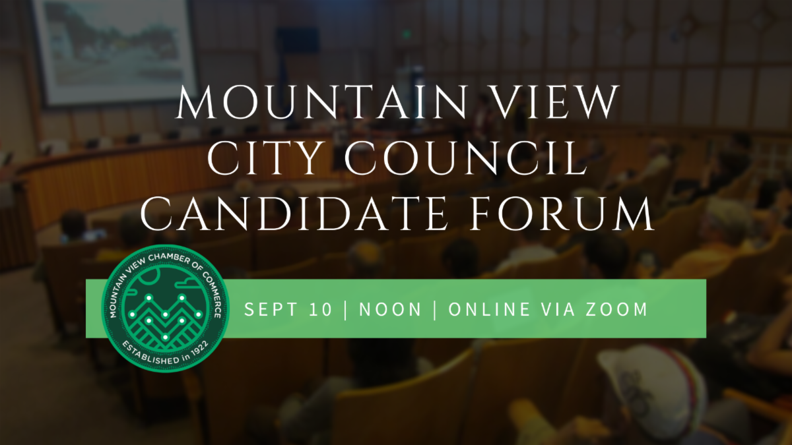

<section>
    <div class="row">
		<div class="columns small-12 hide-for-medium">
			{% include announce_menu.html %}
		</div>
		<div class="left-subnav medium-3 columns hide-for-small-only" data-sticky-container>
			<nav class="columns sticky" data-sticky data-top-anchor="top" data-btm-anchor="stateleg" data-sticky-on="medium">
				<div id='nav-magellan' data-magellan>
					{% include announce_menu.html %}
				</div>
			</nav>
		</div>
      <div id="top" data-magellan-target="top" class="large-9 columns">
		<h1>Announcements</h1>

      <h4 id="chamber" data-magellan-target="chamber">Mountain View Chamber of Commerce Forum</h4>
      <div class="inner">
			
		  <p>Thursday, September 10 at noon </p>
		  <p>This fall, nine candidates are vying for four Mountain View City Council seats. The Chamber of Commerce is hosting a Candidate Forum via Zoom, so you can participate directly from your office or couch. Hear their positions on key business issues, and answers to questions posed from Chamber members.</p>
		  <p><a href="https://zoom.us/webinar/register/WN_mIdd_R1vROGOg10dgiwrWw" target="_blank">To register and submit questions in advance, please click here.</a> </p>	  
	  </div>
	  <hr>
	  
      <h4 id="swan" data-magellan-target="swan">Shoreline West Neighborhood Association (SWAN) Virtual Forum of City Council Candidates</h4>
      <div class="inner">
		  <p>Saturday, September 19 at 7:00 - 9:00 pm </p>	  
	  </div>
	  <hr>
	  
      <h4 id="lwv" data-magellan-target="lwv">League of Women Voters Los Altos Mountain View Forum</h4>
      <div class="inner">
		  <p>Monday, September 21, 7:00 to 8:30pm </p>
		  <p><a href="https://zoom.us/webinar/register/WN_94KHE_ljTROWDBJGwnregw" target="_blank">Register here</a></p>
	  </div>
	  <hr>
	  
      <h4 id="omvna" data-magellan-target="omvna">Old Mountain View Neighborhood Association (OMVNA), City Council Candidate Forum on Zoom</h4>
      <div class="inner">
		  <p>Wednesday, September 30,  7:00 - 8:30 pm </p>
	  </div>
	  <hr>

      <h4 id="svathome" data-magellan-target="svathome">SV@Home Action Fund Forums</h4>
      <div class="inner">
			
          <p>Mountain View City Council Candidates Forums </p>
		  <p>Thursday, October 1 from 6 PM – 7 PM <br>Lisa Matichak <br>Lenny Siegel <br>Sally Lieber <br>Paul Roales </p>
		  <p>Thursday, October 15 from 7 PM to 8 PM <br>Margaret Abe-Koga <br>Pat Showalter <br>Alex Nunez <br>John Lashlee </p>
		  <p><a href="https://us02web.zoom.us/webinar/register/WN_56VNfKIpTG2iDx6dGo-ugQ" target="_blank">RSVP HERE</a> </p>
		  <p>Co-Hosted by Silicon Valley Community Foundation, Tech Equity Collaborative, Abode Services, EAH Housing, First Community Housing, MidPen Housing.</p>		  
	  </div>
	  <hr>

      <h4 id="recordings" data-magellan-target="recordings">Recordings of past city council forums</h4>
      <div class="inner">
          <p>
		  <ul>
		  <li><a href="https://youtu.be/9FFv3BHA7lU" target="_blank">Mountain View Mobile Home Alliance</a> </li>
		  </ul>
		  </p>		  
	  </div>
	  <hr>

      <h4 id="contact" data-magellan-target="contact">Council Candidate Meet & Greet Events</h4>
      <div class="inner">
          <p>In keeping with our city's convention, I won't be endorsing any candidate for Council, nor will I attend any events organized by any Council campaign. However, I recognize that the pandemic impedes ones ability to reach out to voters individually, and I know many residents appreciate the opportunity to meet candidates in person and ask questions. Therefore, I have offered to the candidates to share any meet-and-greets on this page and through my other communication channels.  </p> 
		  <p>To learn more about the candidates: 
		  <ul>
		  <li>Margaret Abe-Koga: <a href="mailto:mak4council@gmail.com" target="_blank">email</a> | <a href="https://www.relectmak2020.com" target="_blank">website</a></li>
		  <li>José Gutiérrez: <a href="mailto:mtn.view.jose@gmail.com" target="_blank">email</a> | <a href="https://www.jose4citycouncil.com" target="_blank">website</a></li>
		  <li>John Lashlee: <a href="mailto:john@votelashlee.com" target="_blank">email</a> | <a href="https://www.votelashlee.com" target="_blank">website</a></li>
		  <li>Sally Lieber: <a href="mailto:2020@sallylieber.org" target="_blank"> | <a href="https://www.votesally.org" target="_blank">website</a></li>
		  <li>Lisa Matichak: <a href="mailto:lisa.matichak@gmail.com" target="_blank">email</a> | <a href="https://www.LisaForCouncil.com" target="_blank">website</a></li>
		  <li>Alex Nunez: <a href="mailto:alex.nunez@protonmail.com" target="_blank"> | <a href="https://www.AlexNunezForCouncil.com" target="_blank">website</a></li>
		  <li>Paul Roales: <a href="mailto:proales@proales.com" target="_blank">email</a> | <a href="https://www.BuildBetterTogether.us" target="_blank">website</a></li>
		  <li>Pat Showalter: <a href="mailto:patshow4mv@gmail.com" target="_blank">email</a> | <a href="https://patshowalter.com" target="_blank">website</a></li>
		  <li>Lenny Siegel: <a href="mailto:lennysiegel@sonic.net" target="_blank"> | <a href="https://lennysiegelforcouncil.org" target="_blank">website</a></li>
		  </ul>
		  </p>
	  </div>
	  <hr>

      <h4 id="pat" data-magellan-target="pat">Meet and Greet with Pat Showalter and Sanjay Dave</h4>
      <div class="inner">
          <p>September 9, 7:30 pm</p>
		  <p>A virtual meet and greet with Pat Showalter and MVLA High School Board candidate Sanjay Dave.  Learn more about these candidates and share your thoughts with them on critical issues facing our city and schools. <a href="https://www.eventbrite.com/e/virtual-meet-and-greet-for-pat-showalter-and-sanjay-dave-tickets-118558302073" target="_blank">Register here</a>.  
		  </p>		  
	  </div>
	  <hr>

      <h4 id="police" data-magellan-target="police">Mountain View Listening Forums on Local Policing</h4>
      <div class="inner">
          <p>The Human Relations Commission (HRC) is hosting listening forums for individuals to share their personal stories and experiences of interactions with Mountain View police. </p>
		  <p>The HRC is seeking the engagement of residents, visitors, and workers of Mountain View in order to increase visibility of local police interaction with the community at large, as well as gather information for a Commission report to the Mountain View Police Department and City Council to help inform future police policy and programs. The forums are meant to create space for Mountain View residents to share their personal stories and engage in small group dialog about their experience with policing in Mountain View (positive, negative or neutral). Peninsula Conflict Resolution Center (PCRC) will facilitate the sessions.</p>
		  <p>The following are the dates and times of the sessions. The HRC also will have options for individuals who wish to tell their stories in written form or on a 1-on-1 basis. Please visit our <a href="https://engage.mountainview.gov/" target="_blank">policing forums site</a> to learn more. Requests for a 1-on-1 interview can be sent to HRC Chair IdaRose Sylvester, <a href="mailto:idarose@siliconvalleylink.com" target="_blank">idarose@siliconvalleylink.com</a>. </p>
		  <p>
		  <ul>
		  <li>Session 2 for Youth (ages 15-24) - Thursday, September 10, (5:00-7:00 pm) (<a href="https://zoom.us/meeting/register/tJcuceqprDMiGdQPMTyM7T0FaE3w3E46UA0E" target="_blank">Registration Link for Session 2</a>) </li>
		  <li>Session 3 in Spanish - Thursday, September 17, (6:30-8:30 pm) (<a href="https://zoom.us/meeting/register/tJYpdeyvqjwsHND_iMyQ9k5aKSpaQ39emeHN" target="_blank">Registration Link for Session 3</a>) </li>
		  <li>Session 4 in Mandarin - Thursday, September 24, (6:30-8:30 pm) (<a href="https://zoom.us/meeting/register/tJAlfumvrDwoHtJiXJ6m4vKMEazivrOwWnXA" target="_blank">Registration Link for Session 4</a>)</li>
		  </ul>
		  </p>
		  <p><a href="https://www.vta.org/blog/service-adjustments-starting-aug-10-will-increase-frequency-improve-alignment" target="_blank">More information available here</a></p>		  
	  </div>
	  <hr>

      <h4 id="grandjury" data-magellan-target="grandjury">Court Seeks Candidates for Public Watchdog Agency </h4>
      <div class="inner">
          <p><b>Recruitment begins for 2021 Civil Grand Jury panel </b></p>
		  <p>Presiding Judge Deborah A. Ryan has announced that the Superior Court of California, County of Santa Clara, is seeking volunteers to serve on the 2021 Civil Grand Jury. </p>
		  <p>The Civil Grand Jury, an arm of the Superior Court, is a part of the judicial branch of government. It serves as the county’s civil watchdog agency and may examine all aspects of county and city government, special districts, and school districts. It is authorized to inspect and audit books, records, and financial expenditures, to ensure accountability of public funds. The Grand Jury may also inspect jails and juvenile detention facilities. <p>
		  <p>Grand Jury service affords citizens the unique opportunity to contribute to the efficiency of local government and play an integral part in ensuring that government officials are accountable to residents. Applicants must be 18 years of age or older, United States citizens, and residents of Santa Clara County. Service on the grand jury does require a time commitment of an average of 25 hours per week, or as determined by the Grand Jury. </p>
		  <p>Due to the challenges posed by the Novel Coronavirus (COVID-19) and in line with California Penal Code §905.5(b), the Court determined it is in the best interest of the institution of the Civil Grand Jury to transition from a fiscal year term to a calendar year term. This change was considered and approved by the County Board of Supervisors and has necessitated that the next term of the Civil Grand Jury begins on January 4, 2021. </p>
		  <p>Additionally, the Civil Grand Jury Ceremony to honor and discharge the 2019-2020 Civil Grand Jury, and impanel the newly selected 2021 Civil Grand Jury, has been rescheduled to Thursday, December 17, 2020, at 4 pm, and will be held remotely. </p>
		  <p>Persons interested in applying may obtain an application online at <a href="https://www.scscourt.org/" target="_blank">www.scscourt.org</a> under “Civil Grand Jury”. Questions may also be directed to Britney Huelbig, Deputy Manager for the Civil Grand Jury, at 408-882-2721 or <a href="mailto:CGJ@scscourt.org" target="_blank">CGJ@scscourt.org</a>. </p>
	  </div>
	  <hr>

      <h4 id="applyathon" data-magellan-target="applyathon">Affordable Housing Applyathon </h4>
      <div class="inner">
          <p>Community Services Agency (CSA) and Sunnyvale Community Services (SCS) are hosting a hybrid affordable housing workshop on Wednesday, September 30th, 2020. A virtual affordable housing presentation, followed by a safe application distribution. CSA and SCS will follow all COVID-19 guidelines Santa Clara County and the city of Mountain View and Sunnyvale have set forth. Please wear Personal Protective Equipment (PPE) and be sure to stay home if you are experiencing any COVID-19 symptoms to keep everyone safe. Thank you and we hope that you can join us! For more information, please contact Eonis Cibrian Pelayo at <a href="mailto:ecibrianpelayo@csacares.org" target="_blank">ecibrianpelayo@csacares.org</a>.
		  </p>	  
	  </div>
	  <hr>
	  

      <h4 id="hsr" data-magellan-target="hsr">California High-Speed Rail - Draft Environmental Impact Report/Statement for San Francisco to San Jose Project Section</h4>
      <div class="inner">
          <p>The California High-Speed Rail Authority (CHSRA) welcomes your input on the San Francisco to San Jose Draft Environmental Impact Report/Statement (DEIR/EIS). Comments are accepted until September 9, 2020. This is the final opportunity to provide comment on the Project’s effects in your community. </p>
		  <p>
		  <ul>
		  <li><a href="pdf/DEIREISFactSheet.pdf" target="_blank">DEIR/EIS Fact Sheet</a> </li>
		  <li><a href="pdf/DEIREISFAQ.pdf" target="_blank">DEIR/EIS FAQ</a> </li>
		  <li><a href="pdf/DEIREISNOA.pdf" target="_blank">DEIR/EIS Notice of Availability/Notice of Public Hearing (NOA)</a> </li>
		  <li><a href="pdf/DEIREISResourcesGuide.pdf" target="_blank">DEIR/EIS Resource Guide</a> </li>
		  <li><a href="pdf/OnlineMeetingNotificationFlyer.pdf" target="_blank">Online Meeting Notification Flyer</a> </li>
		  </ul>
		  </p>
		  <p><a href="https://hsr.ca.gov/programs/environmental/eis_eir/draft_san_francisco_san_jose.aspx" target="_blank">More information available here</a></p>		  
	  </div>
	  <hr>

      <h4 id="bikematchsv" data-magellan-target="bikematchsv">#BikeMatchSV:  Get a Bike, Give a Bike, Fix a Bike</h4>
      <div class="inner">
          <p>#BikeMatchSV matches people who cannot afford a bicycle with people who have bicycles they are not using. </p>
		  <p><b>Cannot afford a bicycle but need one to get around?</b> <br><a href="http://bikex.org/bikematch" target="_blank">Fill out a form</a> and we will try to match you with a donor to receive a free bicycle.  The priority is for essential trips, but all transportation needs will be considered</p>
		  <p><b>Have a bike you aren’t using?</b> <br>If it’s in perfect working order, we’ll match you with a recipient. If it needs a bit of work, SVBE will refurbish the bike and give it new life. We’ll make an appointment for your drop-off. </p>
		  <p><b>Have a bike you aren’t using?</b> <br>If it’s in perfect working order, we’ll match you with a recipient. If it needs a bit of work, SVBE will refurbish the bike and give it new life. We’ll make an appointment for your drop-off. </p>
		  <p><b>Want to help with the effort?</b> <br>You can make a donation to cover the cost of bike parts (the average bike we refurbish requires $40 in parts). If you can help to repair bikes at home, please leave a message at the phone number below. </p>
		  <p>If you need a bike, have a bike you not using or would like to donate, please complete a form here: <a href="http://bikex.org/bikematch" target="_blank">http://bikex.org/bikematch</a>. If you need assistance, please call or text us at: 650-417-3091. <br>The #BikeMatchSV program is sponsored by the Silicon Valley Bicycle Exchange and the Silicon Valley Bicycle Coalition. </p>
	  </div>
	  <hr>  

		<h4 id="i280">Overnight Ramp and Lane Closures on Interstate 280 In Multiple Cities within San Mateo/Santa Clara Counties</h4>
		<p>Santa Clara and San Mateo Counties – Caltrans will begin a resurfacing and improvement project on Interstate 280 (I-280), in the following cities; Menlo Park, Los Altos, Los Altos Hills, Cupertino, and Palo Alto. The project will begin north of Sand Hill Road in San Mateo County, to Foothill Boulevard in Santa Clara County. </p>
		<p>Construction will include grinding and paving, curb ramps and guardrails enhancements to preserve and extend the life of the existing pavement and improve ride quality on I-280. Project activities will be conducted during the evening. Intermittent ramp and lane closures will take place with at least one lane for traffic throughout the night. Detours will be in place. Work will continue throughout the Summer of 2022. </p>
		<p>Overnight Work Schedule: <br>Northbound and Southbound I-280 <br>Monday through Friday: 7:00 PM to 7:00 AM </p>
		<p>Residents will experience normal construction noise, which will be monitored. </p>
		<p>Message and directional signs will be in place to assist motorists traveling in the area. For 24/7 traffic updates, follow 511.org: <a href="https://twitter.com/511SFBAY" target="_blank">https://twitter.com/511SFBAY</a>.  </p>
		<p>For real-time traffic, click-on Caltrans QuickMap: <a href="http://quickmap.dot.ca.gov" target="_blank">http://quickmap.dot.ca.gov</a>.</p>
		<hr>

		<h4 id="caltrain">Caltrain Electrification</h4>
		<p>In Summer 2018, Caltrain began performing work along the railroad corridor in Mountain View. </p>
		<p>The activities during this time included locating underground utilities, testing soil conditions, inspecting signal/communication equipment, potholing, and pruning/removing trees in preparation for the installation and operation of the Overhead Contact System that will power electric trains. </p>
		<p>Caltrain crews will be extending the existing set-out track approximately 500 feet in order to accommodate on-track equipment required for Caltrain Electrification.  The current set-out track is between Farley Street and South Shoreline Boulevard in Mountain View.  Construction will require a staging area for foundation installation, pole installation, construction material and pole delivery and storage as well as for loading and unloading of train cars. The loading and unloading of construction train cars and equipment will require the use of trucks, loading of construction trains and occasional use of backup alarms. Staging is expected to begin in October 2019 with construction occurring over a 8-12 month period. </p>
		<p>Vehicles will enter the staging area off of Central Expressway at Farley Street.  Egress will occur south of South Shoreline Boulevard back onto the Central Expressway. </p>.
		<h5>CONSTRUCTION AREA MAP</h5>
		<br>
		<hr>

		<h4 id="green">Mountain View Green Building and Reach Codes FAQ</h4>
		<p>The City’s Community Development Department has created a new webpage to provide information regarding the recently adopted Reach Codes. </p>
		<p>Information regarding the City’s Amended Green Building Codes (MVGBC) and Reach Code: 
		<ul>
		<li><a href="https://tinyurl.com/wxrbwnh" target="_blank">https://tinyurl.com/wxrbwnh</a> </li>
		<li><a href="https://tinyurl.com/vgl56cj" target="_blank">https://tinyurl.com/vgl56cj</a> </li>
		</ul>
		</p>
		<hr>
		
      </div>
    </div>
</section>
